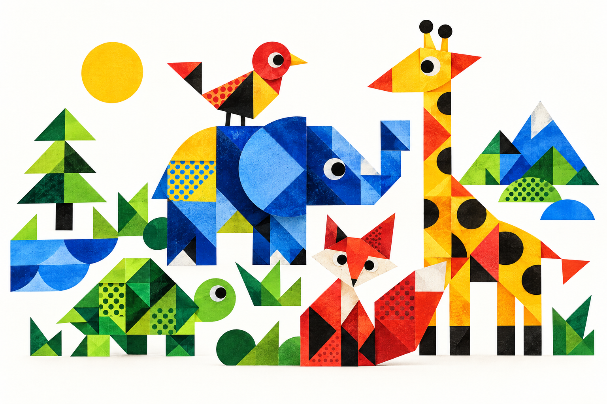
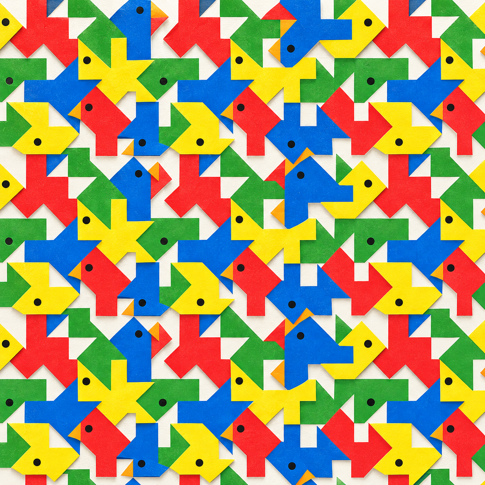
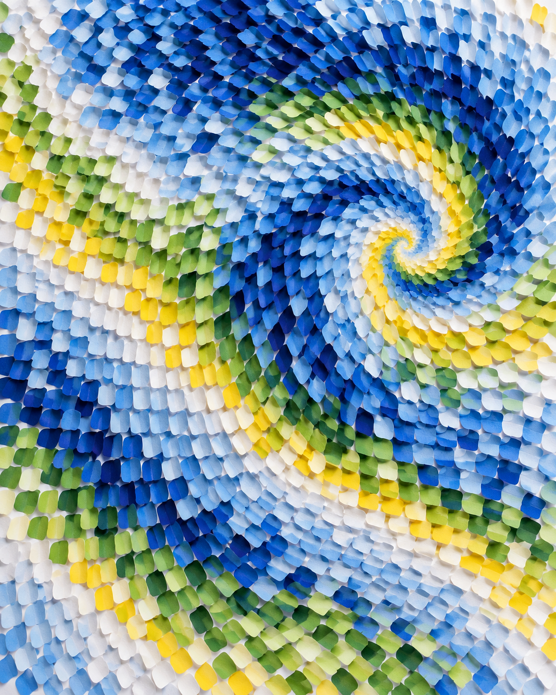

Exact comparison
Guided play keeps children active while an adult can label visible features: shape, color and direction.
AAP clinical report ↗Five short experiments for patterning, spatial thinking and flexible attention.

Translate / rotate
Tap / observe


These games practice skills used in published child-development research. The site itself has not been clinically validated and cannot guarantee cognitive improvement.
Guided play keeps children active while an adult can label visible features: shape, color and direction.
AAP clinical report ↗Research with 4-year-olds maps how children notice and extend a repeating unit such as AB or AAB.
Rittle-Johnson et al. ↗Spatial assembly was studied directly in 3-year-olds and was associated with concurrent early mathematics.
Verdine et al. ↗Touch-screen studies show this ability is still emerging from about 3½ years, so the game uses simple shapes, low visual load and no timer.
Frick et al. ↗The color-then-shape switch adapts the Dimensional Change Card Sort, a classic preschool executive-function task.
Kloo & Perner ↗Observed puzzle play between ages 2 and 4 predicted later spatial-transformation performance. A randomized study also found that five weeks of either digital or concrete spatial-assembly practice improved trained spatial performance in 3-year-olds versus a control group.
Play together for a few minutes. Ask: “Which way is it pointing?” “What repeats?” or “What is the rule now?” Careful looking and trying matter more than speed.